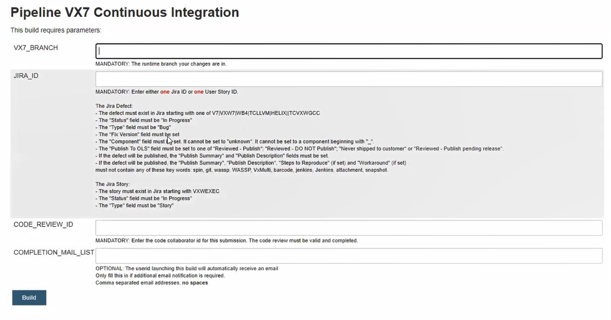

Submitting Code into the Integration Branch¶
Throughout the course of developing Features, code changes based on defects, Developers are encouraged to frequently test and submit their code into a common integration branch. This document describes the submission process and the prerequisites that must be met prior to submitting code.
Merging to vx7-integration¶
In order to submit code to the “vx7-integration” branch, developers must use the Continuous Integration (CI) Pipeline in Jenkins. To do so you must provide references to the appropriate development artifacts and ensure your JIRA records are in order.

Log into the http://vxjenkins.wrs.com:8080/ webpage
Select the “Project 01.0 VX7 Continuous Integration” pipeline (i.e. http://vxjenkins.wrs.com:8080/job/vx7_CI_launcher/)
Click on “Build with Parameters” (i.e. http://yow-build50-vm.wrs.com:8080/job/CI_Pipe/build?delay=0sec)
NOTE: if you don’t see this option, check if logged in
Fill the parameters required by the build pipeline as it pertains to User Story and/or JIRA
VX7_BRANCH: This is the Git runtime branch where your code was submitted
JIRA_ID: Must be either Jira Defect or Jira Story
The criteria to meet a valid Jira Defect and Story is detailed on the “Build with Parameters” page and will not be repeated here to avoid having to update the text in 2 places when it changes.
CODE_REVIEW_ID: This is the link to the Code Collaborator review you created (see Code Reviews and Doc Reviews)
COMPLETION_MAIL_LIST: This is a list of email recipients that should be notified once submission is completed
Click on the “Build” button at the bottom of the page
The above steps will cause the Jenkins pipeline to verify your development artifacts, run rudimentary sanity wassp tests and attempt to merge the code on your behalf
If successful: an email will be sent and your code will be merged to the “vx7-integration” branch
If unsuccessful: the pipeline will notify which of your development artifacts or build tests failed to pass validation
If unsuccessful, and all artifacts and build tests were validated:
The pipeline may have encountered a merge conflict (which you will have to resolved prior to re-submission)
The pipeline may have detected new compiler warnings
Merging to Helix/HVP-integration¶
Developer Info - Code Development Workflow¶
This workflow applies for fixing issues for HAZOP, coding violations, and nightly tests.
File a HELIXCERT defect
For GOS: set component = “gos”
For HV: set component = “hv”
indicate the cert “component” it is against in the summary of the defect using the format [<component name>] . E.g. “[Vx_kernel_msgQ]: blah blah blah”.
labels to apply
regression for functionality regression (most likely nightly)
code_rework for any type of code rework
tools for test harness, ci pipeline, etc.
If the layer needs to be updated, then number up the latest digit by 1 and add .cert at the end of the layer, e.g. 1.2.3.4 becomes 1.2.3.5.cert.
Fix the issue - there`s no need to update the Jira publication field.
Run any regression testing
For GOS, e.g. if you are fixing POSIX, we got vxTest for posix tests to run.
Use Developer Cert Pipeline, select vxworks7 and then the vxTest components you want to run
For HV:
Minimal testing required any necessary developer testing plus run the golden matrix
Run any requirement based tests that are available: <TBD for the pipeline>
Review the code
Include experts in that area, e.g. if you are fixing POSIX, include reviewers like Dan Kresja or Zoltan or Sekhar. Code Collaborator Review should provide, tests ran, defect fix, etc.
Commit the code using the cert ci pipeline
If the fix should also be propagated to the vx7-integration branch, (ideally anything in the vx7-SC0630 branch (default assumption)), then clone the defect for vx7-integration (i.e. into the various projects like V7PRO, V7COR, etc), fix it in vx7-integration following vx7-integration defect fixing strategy.
Change Log¶
Date |
Change Request ID |
Version |
Change By |
Description |
05/01/2020 |
N/A |
0.1 |
Naomi Lee |
Transferred content from Submit Code Integration Branch Jive page |
06/26/2020 |
N/A |
0.2 |
Shree Vidya Jayaraman |
Update based on Kitty’s feedback |
07/22/2020 |
N/A |
0.3 |
Shree Vidya Jayaraman |
Update based on Kitty’s feedback (Helix Code Development Workflow) |
08/20/2020 |
N/A |
0.4 |
Shree Vidya Jayaraman |
Update based on Shawn’s feedback |